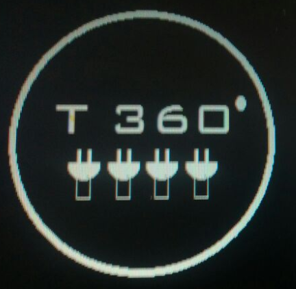

Language: English
Aquí explicaremos la etapa de Design Thining en el cual buscaremos la solución y producto, luego de recopilar toda la información necesaria durante la etapa anterior (empatía) y así utilizar lo que realmente aportara a nuestro problema y así llevarnos a nuevas soluciones ya que luego de juntar ideas identificaremos el problema y buscaremos la solución para así obtener un resultado positivo.
Ya después de haber recopilado toda la información sobre la etapa de empatizar, tendremos nuevas ideas para poder resolver los problemas que tengan nuestros clientes y por ultimo especificar cuáles serán los problemas para llegar a la una solución innovadora.
Logo de la empresa
Raiz del Problema
Mejoras y Diferencias
•Una garantia de 5 años
• Guia de tomacorriente y sus herramientas
• Conexionado y alimentación en cualquier lado
• Entrega a domicilio en todo Perú
Visión del cliente
Aquí nos fijaremos cuál es su perspectiva de nuestro cliente tomando en cuenta las propuestas dadas por el cliente ya que nos ayudara a mejorar nuestro producto lo cual nos hará mejores innovadores.
Caracteristicas